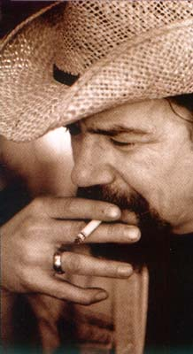
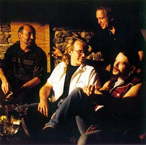
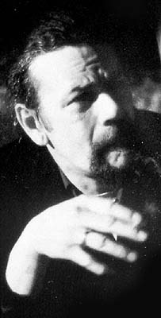
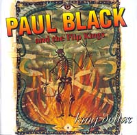

(Makes Her Way) The Hard Way (326k)
G-Baby (544k)
Dead Shrimp Blues (fragment) (528k)

БЛЭК, Пол (Baraboo, Wisconsin, USA) и группа “Флип Кингз” (Flip Kings):Американский блюзовый певец, гитарист, один из наиболее оригинальных исполнителей 90-х в технике “слайд”. По определению самого Блэка он играет на “баритон-гитаре”.
В штате Висконсин, в городке Барабу (население: 7000), белый подросток Пол Блэк был вознесен на вершину мечтаний американских мальчишек и низвергнут с нее. Его взяли кэтчером "настоящую" бейсбольную команду "Пираты", а он продул "всухую" первый же ответственный матч. DAT'TZ DE BLUZ, BABY.
Его отец был коммивояжером по делам барона торговли горячими совиками Оскара Мейера, а мать - парамедиумом. На смеси житейского и запредельного замешан блюз. Плюс: в Барабу расположена штаб квартира знаменитейшего американского цирка и музея всемирного цирка, и в ночном небе провинциального городка львиный рык разносился от края до края. Впервые услышав блюз, BLACK сказал: "Это была запредельна музыка, как из другого мира". Такая музыка ему была сродни.
Блюз в город Барабу, штат Висконсин, к Полу Блэку шел короткими волнами через радиоприемник "Зенит-Трансокеанское радио всемирных волн" ("Zenith Transoceanic world band radio"), подаренный отцом-коммивояжером. Блэк-сын припоминает: "Я искал ночные игры для слушателей, а наткнулся на эти захватывающие радиостанции, типа передающей Госпелл из Чарлстона, ОК. Я открыл станцию, передававшую Хаулин Вулфа - и это было то, что нужно. Это была запредельная музыка, как из другого мира. Она меня зацепила, я попался, словно на крючок".

Собственная гитара у Блэка появилась в 13 лет, и вскоре он стал главарем "Блюзовой банды похитителей женщин" - первый блюзбэнд города Барабу - Stealer Women Blues Band. Когда с бейсбольной битой все стало ясно, гитара стала править его миром. По счастливой случайности BLACK познакомился с молодым слайдгитарным талантом Сонни Ландресом (Sonny LANDRETH) - первой на его пути родственной слайдовой душой по блюзу. Четырех года они прошли вместе по школе блюзовой техники игры и выживания, давая концерты, к примеру, в луизианских военных лагерях. "Три года мы искали барабанщика", - отвечает BLACK на вопрос о том, как это было. "Музыка Пола Блэка идет от дальних пределов души,"- говорит испытанный друг LANDRETH,- "В выступлениях, сочетающих сырую мощь и вдохновение, он блистает мастерством беседы между голосом человека, охваченного порывом страсти, и властным голосом слайд-гитары". (Говорит-то как пописанному).BLACK играл в Остине, штат Техас, бывший центром молодежной блюз-рок-общины, из которой вышли, в частности, братья Воэн (VAUGHAN). В Сан-Франциско, где еще хипповали, он работал “нормальный музон” в портовых кабаках и дружил с тогдашней блюз-звездой Элвином Бишопом (ELVIN BISHOP). С другим гитаристом-участником “Блюзбэнда Пола Баттерфилда” (Paul BUTTERFIELD’s Bluesband) Майклом Блумфилдом (Michael BLOOMFIELD) Блэк халтурил радиоджинглы. Блумфилд тогда как раз проводил заключительные эксперименты на тему, можно ли пропить мастерство (оказалось, мастерство – трудно, а здоровье и жизнь - легко). Халтурщики предпочитали оплату наличными – процентам через банк. И, разумеется, проиграли, поскольку один из джинглов Блэка, к примеру, крутили на радио 15 лет кряду.
В первый раз женился BLACK на девушке из левацкой американской семьи. Дом был наполнен воспоминаниями об “охоте за ведьмами” и американском рабочем движении, песни Пита Сигера (Pete SEEGER) включая… Есть ли тут глубинная связь или нет, но именно с той женитьбы BLACK фокусируется на слайдовой технике: “Я просто решил: хватит играть нормальную гитрау, надо играть “бутылочным горлышком”. Понимаешь, это ведь нечто неандертальское… Этот кусок трубы!..” От слайда гитара воет, и стонет, и ноет – не то от радости, не то от боли.
16 августа 1977 года, день смерти Элвиса (ELVIS has left the building), был трудным днем для перегонщика машин. Вернувшись домой, Блэк наспех перетащил инструменты из машины домой и свалился дремать на кушетку. Его поднял стук в дверь - на пороге стояло прекрасное существо, держа в руках его драгоценную гитару lap steel. "Вы оставили это на улице, я подумала, это вам еще пригодится." Следующую работу Блэк отложил - он не мог уехать из дома, неохомутав на ангела-хранителя. Странстви закончились. У них теперь - двое сыновей.

И вот с тех пор прошло без ерунды прошло еще два десятка лет до контракта на запись первого альбома. Проживая в Нью-Йорке, BLACK оставался практически неизвестным за пределом узкого круга знатоков нью-йоркского клубного блюза. Пока не познакомился с Дэвидом Зет Ривкиным (David Z.RIVKIN), который музыкальную карьеру начал в группе Принца, а с тех пор весьма продвинулся в звукозаписывающем деле, спродюссировав, к примеру, "Пятерых молодых каннибалов" (Five young cannibals). Но, как всякий хороший еврейский клавишник, Дэвид Зет (отчего не пишет фамилию на конвертах?) увлекалс блюзом. Он-то и взялся, наконец, помочь организовать альбом блюзмэну, который был равно уникален и своим исполнительским баритональным стилем, и тем, что за четверть века в блюзе так и не записал ни одного альбома.Альбом назван "Король Доллар" (KING DOLLAR) - в честь ломбарда города Линкольн, штат Небраска. Заведение запомнилось гитаристу Пэту Хэру (Pat HARE), и он упомянул его в песне "Убью Мою Бейби". (HARE был чумовым раньше-времени-заигравшим-безлимитный-дисторшин гитаристом в блюзбэндах Джеймса Коттона и Мадди Уотерса (James COTTON, MUDDY WATERS) , но свою "бейби" он действительно убил, и тюряга поставила крест на его блюзовой карьере): “Я схожу к "Королю Доллару", выкуплю свой пистолет. Убью я свою бейби, поступает она со мной нехорошо. Убью я свою бейби, хватит ей мне врать. Лучше я сяду, чем не знать покоя, как счас”.
“Король Доллар” записан с его гастрольной группой, которую BLACK назвал – в память о пустых бейсбольных чаяниях – FLIP KINGS (“Короли Флипа”). А “Флип” – это игра с бейсбольными карточками, типа наших “фантиков-перевертышей”.
Вышел альбом в "Доме Блюза" (лейбл HOUSE OF BLUES). А к широкой публике вышел музыкант со своим сложившимся, глубоко индивидуальным стилем “неторопливого” блюза, глубоким низким голосом и виртуозной оригинальной “баритональной” (по выражению Блэка) техникой слайда. В альбоме миссиссиппские блюзовые стандарты звучат с роллингстоуновским ритмгитарным похуизмом, а роллингстоуновские стандарты - так, словно в них вселился дух Дельты.
"Он - блюзовый алхимик, а этот альбом - лишь образец добытого золота" - написал старый друг, музыкант и журналист Бен Сидран.
Дискография:
1996 “King Dollar” (House Of Blues)
Paul Black Tribute Page on Blue Line Unlimited - страница, сделанная в американском городе Медисон, где сейчас живет и выступает в клубах Paul Black. На странице есть несколько впечатляющих музыкальных фрагментов, которых Вы не найдете на King Dollar.


Moo Goo (fragment) (464k)

(Makes Her Way) The Hard Way (326k)

G-Baby (544k)

Dead Shrimp Blues (fragment) (528k)